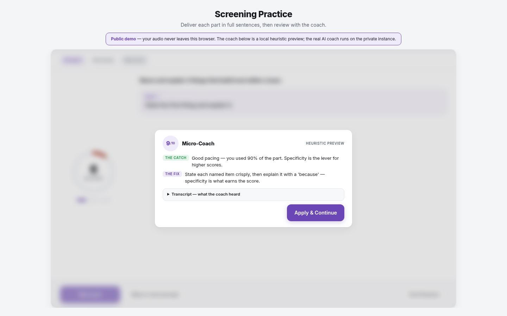
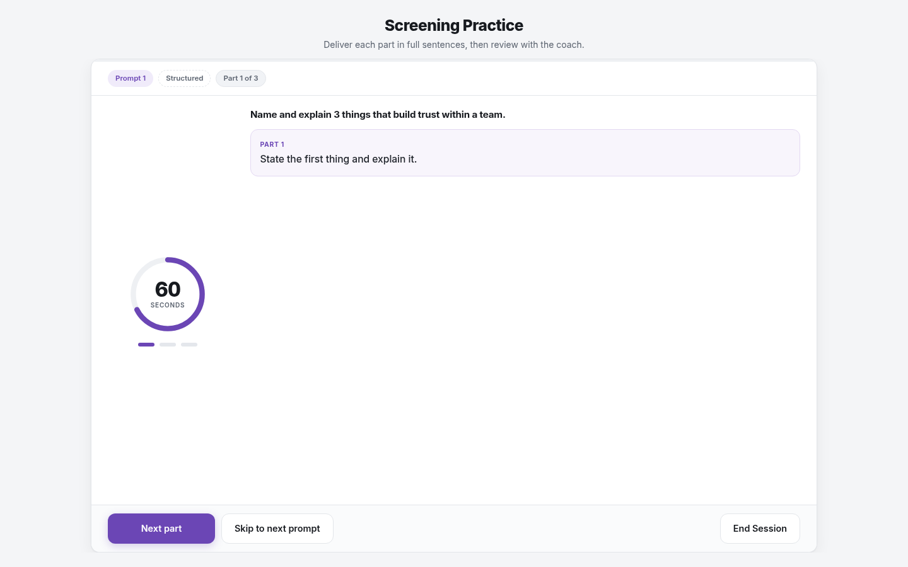
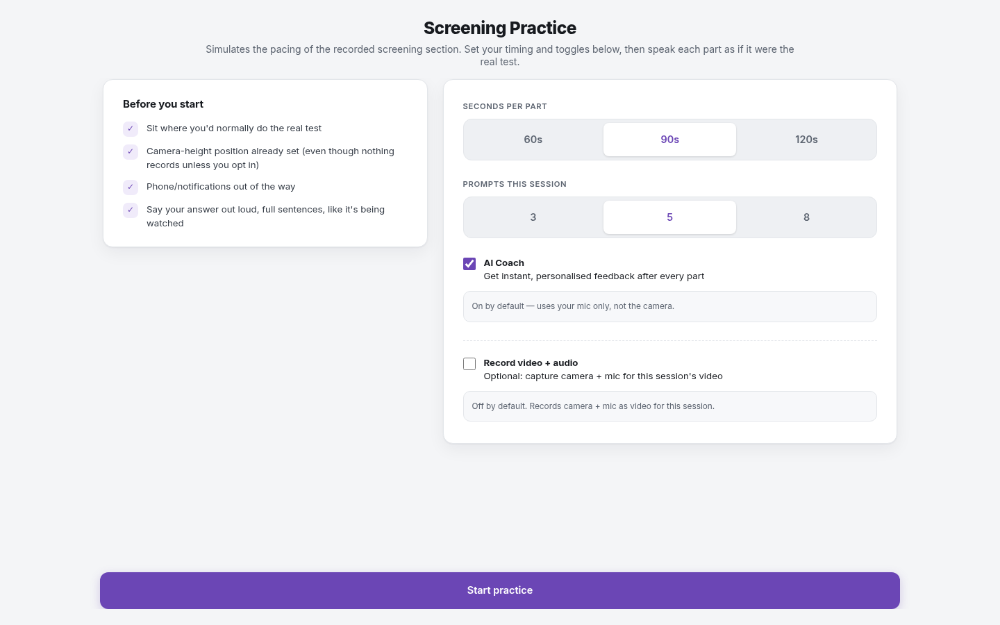
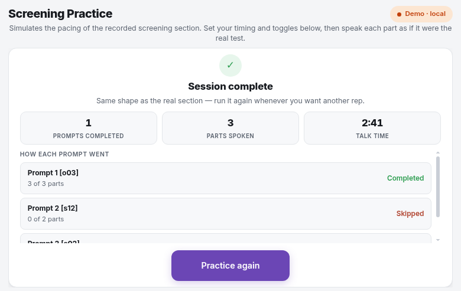

01 / 04 FRAME
PRJ-01
LIVE · $0 STACK
AI-Coached Screening Practice
A timed teamwork-prompt practice tool that listens, scores every answer with an AI Micro-Coach, and hands you The Catch and The Fix before you move on. No framework, no build step — and it all runs for free.
- ARCH — 3 static files + 4 Cloudflare Pages functions
- BANK — 21 structured & open prompts with per-part countdowns
- COACH — Whisper transcription + LLM evaluation → score, The Catch, The Fix
- RUN — recording, clip uploads, coaching & summary emails on a $0 stack